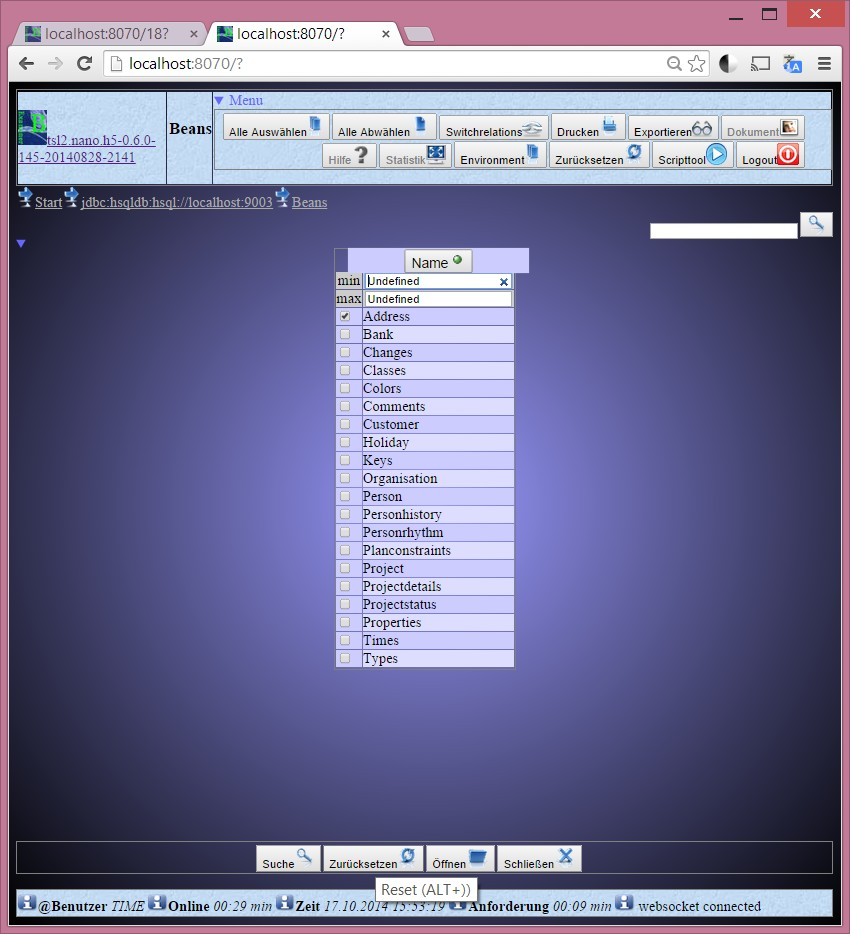

FullRelation H5
Autor: Thomas Schneider 2012
generic html5 gui implementation providing a model driven access (MDA), bound to tsl2.nano.common bean-package and tsl2.nano.serviceaccess and it’s GenericService using the javax.persistence. It is possible to design a class or database model, exporting it and to start a build process resulting in a complete html application, providing a comfortable way to edit all entities and their relations.
Goals:
Using the NanoHTTPD Server as base, this client application creates html surfaces, sending them through the integrated server to an html browser. Entry point is the file application.html defining the browser request http://localhost:8067.
It is not a real web-application platform but a simple way to use html5 as graphical user interface – in a standard client application.
The base framework is tsl2.nano.common.
The data access is done by:
It is possible to use an ejb container in an application server, but the default is set to use jpa directly on the client (using tsl2nano.directaccess).
The tsl2.nano.h5 framework can be started through it’s jar tsl2.nano.h5-xxxxx.jar. A start script _run.bat is available to do this in windows. Starting it, a given directory is used as a kind of workspace where you put all configuration and jar files into to be used. This jars may be ant, an o/r-mapper like hibernate with all it’s dependencies. The configuration files are the environment.xml and all xml files describing the presentation of each entity bean. Icons for all buttons and backgrounds are in the icon folder. The main jar file can contain all dependent jar files (as described in the manifest file) or outside in the same directory as the main jar.
A possible start configuratin would be:
Hibernate 4 for example would have the following dependencies:
A sample environment is h5.sample, containing all icons, jars and configurations for a project. It may be used for other nano.h5 projects. It uses:
Before you start nano.h5, you should start the sample hsqldb database:
h5.sample/runServer.bat
To start nano.h5 you have to call it with following syntax:
java -jar de.nano.h5.Loader [environment-path (default: config] [http-server-port (default: 8067)]
this call is implemented inside the start.bat script. Use that, if you are on windows.
If you start it on windows, a browser will be opened to show the initial screen:
Now you can login to the sample database. It is fully configurable, which o/r mapper and database should be used. After pressing Ok, a persistence.xml will be generated to be found by the javax.persistence implementation.

All entities of the jar-file, containing the entities, will be listed. You can filter the list and select one or more to edit them.

Then you will get a search page with a search filter and an empty list. Pushing the search-button will create the result list.
If you click a column header (here f.e. comments), the list will be sorted by this column – clicking on that column a second time, the sorting will be done in the other direction. The possible actions will be described in the next chapter.
The file h5.sample/environment.xml defines the application behaviour. For further informations read chapter The Environment.
It is possible to change the presentation of each bean. Inside the directory h5.sample/beandef all beans have configuration files to change their presentation and behaviour. If the beandef directory is empty, you can create the bean definitions by clicking on button ‚exit’ on the top left – this will save the current state and exits the application.
It is possible to create an own java project to define own application and bean behaviour. This is described in chapter Creating an own project.
Loading a Nano.h5 application will create and use an environment directory as workspace for it. Resources like icons, configuration xml-file and libraries will be put there – being on top of classpath.
A full list of configuration attributes can be found here
On top of each html page you will see on the left side an application icon (clicking on it, it tries to load the help file nanoh5.html). On top right, all page-specific buttons are shown. The following list tries to describe them. They depend on the current type of bean. A bean list will have other buttons than a beans detail page.
Nano.h5 provides mechanisms to create a full configurable application from a given database definition file (ddl).
Creating an UML-Diagram with perhaps ArgoUML, or creating an ER-Diagram with f.e. architect you may generate a ddl script. Nano.H5 provides an ant-script (mda.xml) to generate a hsqldb-database and generating entity beans through hibernate-tools for the given jdbc-connection.
If you change sources of this plugin, you should start ant script eclipse-tsl2.nano.h5.xml with target tsl2nano.eclipse.h5.export and after that the ‚deploy’ target of your main project.
Normally, you don’t have to create html-pages by yourself, but if you are interested in html5, have a look at the following tutorials/references:
To analyse the html-page in your browser, for example in your Chrome-Browser, you can analyse components by mouse-right-click on analyse element to debug and change the current bean presentation.
Nano.H5 is based on the framework tsl2.common and it’s bean package. The bean package provides a generic and comfortable way to describe your user interface. If the standards of Nano.H5 doesn’t fulfil your needs, you can develop own beans on top of Nano.H5 - without creating special gui-elements or interaction, this will be done by the framework – generating html-pages through the BeanPresentation implementation. Of course, this implementation is extendable, too. Have a look at chapter Dependencies to know, which jar-files you should copy to the environment directory (f.e. h5.sample).
If you download and unpack test.h5.sample, you yield an eclipse project referencing the tsl2.nano jar-files.
File Structure:
Auflistung der Ordnerpfade
Volumeseriennummer : 0059E65C 9A6F:E968
C:.
| .classpath
| .project
| application.html
| debug.log
| environment.xml
| h5.sample.log
| run.bat
| tree.txt
| tsl2.nano.common.1.0.0.jar
| tsl2.nano.h5.0.0.1.jar
| tsl2.nano.h5.default-resources.jar
|
+---h5.sample
| | ant-launcher.jar
| | ant-nodeps.jar
| | ant.jar
| | antlr-2.7.6.jar
| | antscripts.properties
| | antscripts.xml
| | application.html
| | commons-collections-3.2.1.jar
| | commons-lang-2.4.jar
| | dom4j-1.6.1.jar
| | environment.xml
| | freemarker.jar
| | h5.sample.sql
| | hibernate-tools-3.4.0.CR2.jar
| | hibernate.reveng.xml
| | hibernate3.jar
| | hibtool.xml
| | hsqldb.jar
| | javassist-3.12.0.GA.jar
| | jdbc-connection.properties
| | jdbc-connection.properties.bak
| | mda.bat
| | mda.properties
| | mda.xml
| | mypersistence-bean.xml
| | mypersistence-bean.xml.bak
| | mypersistence.xml
| | mypersistence.xml.bak
| | ojdbc14_g.jar
| | runServer.bat
| | shell.xml
| | slf4j-api-1.6.1.jar
| | timedb.jar
| | timedb.lck
| | timedb.log
| | timedb.properties
| | timedb.script
| | trang.jar
| | tsl2.nano.h5.default-resources.jar
| +---beandef | |
| project.xml | |
| start.xml | |
| times.xml | |
| +---generated-bin | |
| \---my | |
| \---app | |
| Loader.class | |
| MyApp.class | |
| +---generated-src | |
| \---my | |
| \---app | |
| Loader.java | |
| MyApp.java | |
| \---META-INF | |
| persistence.xml | |
\---META-INF
MANIFEST.MF
The implementation Loader.java and MyApp.java provide an own entry for the application. The Loader only tells java to load MyApp. MyApp overwrites three methods. Only createBeanCollectors defines own beans and an own navigation stack.
Here is the implementation:
Loader
public class Loader extends AppLoader {
public static void main(String[] args) {
new Loader().start(„my.app.MyApp”, args);
}
}
MyApp
public class MyApp extends NanoH5 {
public MyApp() throws IOException {
}
public MyApp(int port, IPageBuilder<?, String> builder,
Stack<BeanDefinition<?>> navigation) throws IOException {
super(port, builder, navigation);
}@Override
protected BeanDefinition<?> createBeanCollectors(@SuppressWarnings(„rawtypes”) ListbeanClasses) {
/*
* define own beans to present your entities another way
*/
Collectiontimes = Environment.get(IBeanContainer.class).getBeans(Times.class, UNDEFINED, UNDEFINED); BeanCollector<Collection
,Times> beanCollector = new BeanCollector<Collection , Times>(times, BeanCollector.MODE_ALL); AttributeDefinition space1 = beanCollector.getPresentationHelper().addSpaceValue();
beanCollector.setAttributeFilter(„creation”, „dbEnd”, „pause”, space1.getName(), „project”, „comment”);
//more fields on one line (one field has width 3)
beanCollector.getPresentable().setLayout(MapUtil.asMap(L_GRIDWIDTH, 12));
beanCollector.getAttribute(„comment”).getPresentation().setLayoutConstraints(MapUtil.asMap(ATTR_SPANCOL, 6, ATTR_BORDER, 1));
BeanDefinition.define(beanCollector);/*
@SuppressWarnings(„unchecked”) public static void main(String[] args) { startApplication(MyApp.class, MapUtil.asMap(0, „http.port”), args); } }
* define your own navigation stack
*/
return beanCollector;
}
| Version | Date | Description |
| 0.0.1 | 06.07.2013 | First alpha Version |
| 0.0.2 | 21.09.2013 | First beta Version (full basic feature implementation) |